Section 6: Figures with ggplot2
Admin
What you will need
Packages:
- Previously used:
dplyr,lfe,readr,magrittrandparallel - New:
ggplot2,ggthemes,viridis
Data: The auto.csv file.
Last week
Last week we discussed statistical inference—specifically using \(t\) and \(F\) statistics to conduct hypothesis tests. We also talked about simulations and parallelizing your R code.
This week
We will discuss how to utilize R’s powerful figure-making package ggplot2.
Quality figures
Economics journals are not always filled with the most aesthetically pleasing figures.1 To make matters worse, the same journals often feature fairly unhelpful images with equally uninformative captions. One might rationalize this behavior by saying that producing informative and aesthetically pleasing figures requires a lot of time and effort—and is just really hard.
In this section—and in future sections—I hope to demonstrate that while producing informative and pleasing figures probably takes more time that producing uninformative and ugly figures, it does not take that much time and effort, once you learn the basics of ggplot2. There is the cost-side argument; now for the benefit-side argument….
Figures can be very powerful. We have all seen bad figures that shed approximately zero light on their topic. Well-made figures can quickly and clearly communicate ideas that would take several paragraphs to describe. In general, most applied (empirical) economics papers should be able to describe the main results in a single graph.2 Audiences generally love figures. And hopefully your papers and presentations are attempting to communicate to an audience.[Again, if this is not the case, as yourself why not. And try to fix it.]
Finally, you might actually want to look at your data once in a while. Regression is a helpful tool, but don’t forget that there are other tools for analyzing your data. Here is a pretty famous example known as Anscombe’s Quartet.
The setup:
# Setup ----
# Options
options(stringsAsFactors = F)
# Packages
library(dplyr)
library(magrittr)
library(ggplot2)
library(ggthemes)The plot (don’t worry about the syntax for now):
# Reformat Anscombe's dataset
a_df <- bind_rows(
dplyr::select(anscombe, x = x1, y = y1),
dplyr::select(anscombe, x = x2, y = y2),
dplyr::select(anscombe, x = x3, y = y3),
dplyr::select(anscombe, x = x4, y = y4))
# Add group identifier
a_df %<>% mutate(group = rep(paste0("Dataset ", 1:4), each = 11))
# The plot
ggplot(data = a_df, aes(x, y)) +
# Plot the points
geom_point() +
# Add the regression line (without S.E. shading)
geom_smooth(method = "lm", formula = y ~ x, se = F) +
# Change the theme
theme_pander() +
theme(panel.border = element_rect(color = "grey90", fill=NA, size=1)) +
# Plot by group
facet_wrap(~group, nrow = 2, ncol = 2) +
ggtitle("Illustrating Anscombe's Quartet",
subtitle = "Four very different datasets with the same regression line")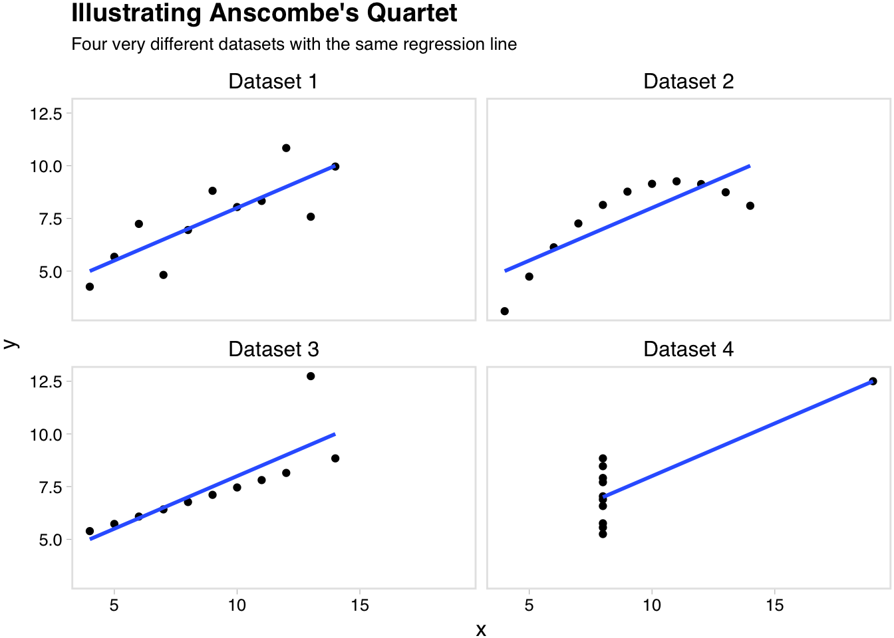
So quality figures can take a little time and effort, but it is likely a use of your time and effort with particularly high yields. And you might learn something.
ggplot2
Having sold you on the creating high-quality figures, let’s talk about R’s ggplot2 package—many people’s go-to figure-making package in R.
Why ggplot2?
First, why aren’t we using R’s base plotting functions? While R’s base package for making graphs is comprehensive and fairly powerful, it has a few drawbacks:
- It is often a bit difficult to manipulate
- Parameters are not named in a helpful way (e.g. to change the line type, you need to remember its abbreviation,
lty) - Coloring or filling by group is not very straightforward
- Limited in scope, relative to
ggplot2and the packages that supportggplot2 - Saving is a bit strange
Introduction
So, what is ggplot2?
Short answer: ggplot2 it a package for creating plots in R.3
Longer answer: (copied from the ggplot2 home page) “ggplot2 is a plotting system for R, based on the grammar of graphics, which tries to take the good parts of base and lattice graphics and none of the bad parts. It takes care of many of the fiddly details that make plotting a hassle (like drawing legends) as well as providing a powerful model of graphics that makes it easy to produce complex multi-layered graphics.”
More information: ggplot2 is yet another package created by Hadley Wickham—yes the Hadley Wickham.
Setup
Let’s load the packages and functions that we will want during this section.
My setup…
# Setup ----
# Options
options(stringsAsFactors = F)
# Packages
library(readr)
library(dplyr)
library(magrittr)
library(ggplot2)
library(ggthemes)
library(viridis)
# Set working directory
setwd("/Users/edwardarubin/Dropbox/Teaching/ARE212/Spring2017/Section06")
# Load data
cars <- read_csv("auto.csv")Our functions…
# Functions ----
# Function to convert tibble, data.frame, or tbl_df to matrix
to_matrix <- function(the_df, vars) {
# Create a matrix from variables in var
new_mat <- the_df %>%
# Select the columns given in 'vars'
select_(.dots = vars) %>%
# Convert to matrix
as.matrix()
# Return 'new_mat'
return(new_mat)
}
# Function for OLS coefficient estimates
b_ols <- function(data, y_var, X_vars, intercept = TRUE) {
# Require the 'dplyr' package
require(dplyr)
# Create the y matrix
y <- to_matrix(the_df = data, vars = y_var)
# Create the X matrix
X <- to_matrix(the_df = data, vars = X_vars)
# If 'intercept' is TRUE, then add a column of ones
if (intercept == T) {
# Bind a column of ones to X
X <- cbind(1, X)
# Name the new column "intercept"
colnames(X) <- c("intercept", X_vars)
}
# Calculate beta hat
beta_hat <- solve(t(X) %*% X) %*% t(X) %*% y
# Return beta_hat
return(beta_hat)
}
# Function for OLS table
ols <- function(data, y_var, X_vars, intercept = T) {
# Turn data into matrices
y <- to_matrix(data, y_var)
X <- to_matrix(data, X_vars)
# Add intercept if requested
if (intercept == T) X <- cbind(1, X)
# Calculate n and k for degrees of freedom
n <- nrow(X)
k <- ncol(X)
# Estimate coefficients
b <- b_ols(data, y_var, X_vars, intercept)
# Calculate OLS residuals
e <- y - X %*% b
# Calculate s^2
s2 <- (t(e) %*% e) / (n-k)
# Inverse of X'X
XX_inv <- solve(t(X) %*% X)
# Standard error
se <- sqrt(s2 * diag(XX_inv))
# Vector of _t_ statistics
t_stats <- (b - 0) / se
# Calculate the p-values
p_values = pt(q = abs(t_stats), df = n-k, lower.tail = F) * 2
# Nice table (data.frame) of results
results <- data.frame(
# The rows have the coef. names
effect = rownames(b),
# Estimated coefficients
coef = as.vector(b) %>% round(3),
# Standard errors
std_error = as.vector(se) %>% round(3),
# t statistics
t_stat = as.vector(t_stats) %>% round(3),
# p-values
p_value = as.vector(p_values) %>% round(4)
)
# Return the results
return(results)
}Basic syntax
Alright. Let’s talk about the syntax of ggplot2. As mentioned above, ggplot2 is “based on the grammar of graphics.” What does that mean? It means that you will build plots like the English language builds sentences.4 In a sense, you will start with a subject—your data—and then apply different modifiers to it, creating layers in your plot and changing various plotting parameters.
This syntax certainly deviates a bit from many other plotting methods out there, but once you see how it works, I think you will also see how clean and powerful it can be.
ggplot()
To start a plot, we use the function ggplot(). This function passes the data to the other layers of the plot. You can also use the ggplot() function to define which variable is your x variable (in terms of x and y axes), which variable is your y variable, and a number of other parameter tweaks.
Let’s see what happens when we feed ggplot() our cars dataset and define x as weight and y as price.
ggplot(data = cars, aes(x = weight, y = price))
A blank plot. Well… not quite blank: we have labeled axes, corresponding to our definitions inside the ggplot() function. And we have a gray background—don’t worry, it is easy to change the background if you don’t like it.
Also, notice that we defined the axes inside of a function called aes(), which is inside of the ggplot() function. We use the aes() function to “construct aesthetic mappings”—it tells ggplot2 which variables we want to use from the dataset and how we want to use them. In the case above, we are telling ggplot2 that we want to use two variables (weight and price) as the axes in the plot. You can also define aesthetic mapping using aes() it other layers.
Adding geom layers
So why is the graph above blank? It is blank because we have not added a plotting layer—we have only defined the dataset and defined the axes.
Let’s add a layer. In ggplot2, we add layers with the addition sign (+). Many of the plotting layers begin with the suffix geom_. For instance, if we want to create a scatter plot, we will add the geom_point() function to our existing plot. Let’s try it.
ggplot(data = cars, aes(x = weight, y = price)) +
geom_point()
Hurray—we have something! And it is even a little interesting!
Let’s read the R code, step-by-step, just as ggplot2 reads it.
- We create a new plot with the function
ggplot(). - We define our dataset to be the data stored in the
carsobject. - Using the
aes()function, we define our x-variable to be weight and our y-variable to be price. - We add a layer that plots points for each observation in our dataset.
What if we want to connect points with a line? We simply add a new layer using geom_line():
ggplot(data = cars, aes(x = weight, y = price)) +
geom_point() +
geom_line()
That was easy.
Hopefully you are beginning to see how ggplot2’s syntax allows a lot of flexibility and customization. By definining the dataset with ggplot() and mapping the axes with aes() inside of ggplot(), the layers that create the points and lines know exactly what to do without any further specification.5
On thes other hand, this graph doesn’t really make any sense. It actually seems less informative than our previous graph. We don’t care about connecting dots.
stat_function()
While we don’t care about connecting dots, we do care about fitting a line through our points. Let’s find the line the best fits through these points using our old friend ols(). For now, we only care about the coefficients, so we will save them as b.
# Regress price on weight (with an intercept)
b <- ols(data = cars, y_var = "price", X_vars = "weight") %$% coef## Warning in s2 * diag(XX_inv): Recycling array of length 1 in array-vector arithmetic is deprecated.
## Use c() or as.vector() instead.Now we will write a function that gives the predicted value of price for a given value of weight. This function will use the coefficients stored in b.
price_hat <- function(weight) b[1] + b[2] * weightNext, we will replace the geom_line() layer in the plot above with a layer using the function stat_function(). The function stat_function() allows you to plot an arbitrary function. In our case, we have already defined the x-axis, so ggplot2 will evaluate our function over the domain of the variable we defined as x (weight).
ggplot(data = cars, aes(x = weight, y = price)) +
geom_point() +
stat_function(fun = price_hat)
What if we want to change the color of the line to blue? Easy: inside of the layer that creates the line (stat_function()), we simply add the argument color = "blue".6
ggplot(data = cars, aes(x = weight, y = price)) +
geom_point() +
stat_function(fun = price_hat, color = "blue")
To make the line thicker, we can use size. size will also make the points bigger in geom_point:
ggplot(data = cars, aes(x = weight, y = price)) +
geom_point(size = 2) +
stat_function(fun = price_hat, color = "blue", size = 1.5)
geom_smooth()
Alternatively, we could add the best-fit regression line to a plot using the geom_smooth() geometry. We just need to make sure the define the method to be lm (linear model) or geom_smooth() will default to a different smoother. Again, because we have already defined the axes, we do not need to define a formula for the regression that geom_smooth() runs.
ggplot(data = cars, aes(x = weight, y = price)) +
geom_point() +
geom_smooth(method = "lm")
If we want to add a quadratic term to the best-fit line using geom_smooth(), we add a formula argument like we would use in lm() or felm():
ggplot(data = cars, aes(x = weight, y = price)) +
geom_point() +
geom_smooth(method = "lm", formula = y ~ x + I(x^2))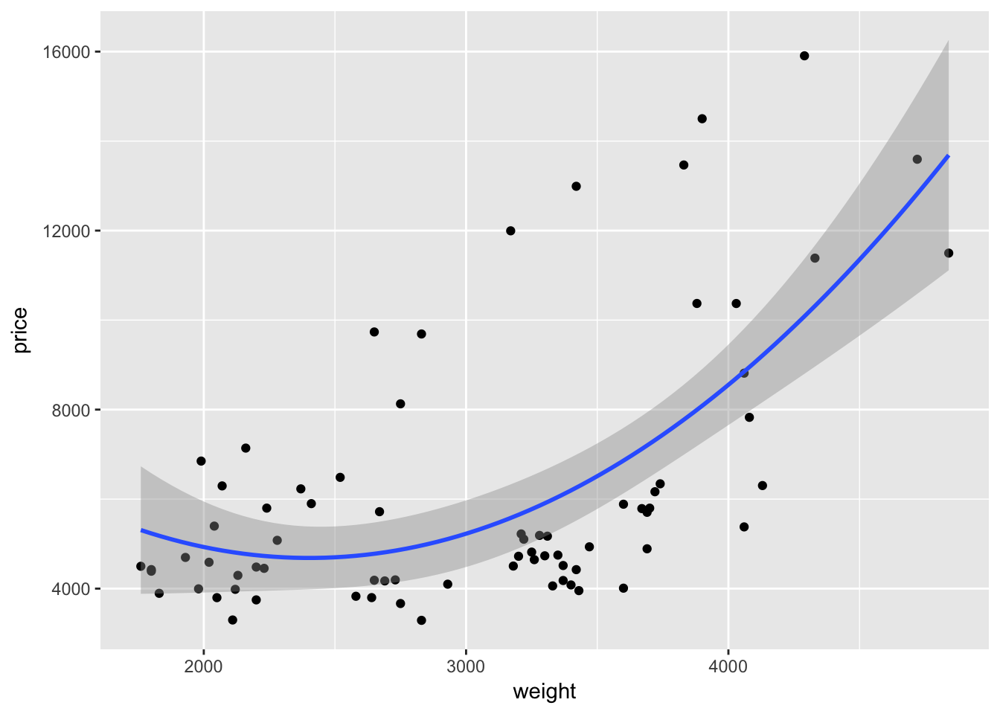
As with many function in R—and especially in ggplot2—we can take advantage of additional options to tweak our graphs. For instance geom_smooth() automatically spits out 95-percent confidence interval. We can use the level argument to change the level of the confidence interval
ggplot(data = cars, aes(x = weight, y = price)) +
geom_point() +
geom_smooth(method = "lm", formula = y ~ x + I(x^2),
level = 0.99)
Or we can remove the confidence interval by specifying se = F.
ggplot(data = cars, aes(x = weight, y = price)) +
geom_point() +
geom_smooth(method = "lm", formula = y ~ x + I(x^2), se = F)
More aesthetics
So far we’ve discussed two aesthetics: x and y, which define the two axes (if you only want to define one axis, just use x). There are a lot of other options for aesthetic mappings: color, size, shape, group, line type (linetype), etc.
In general, less is more when it comes to plotting: if your data only vary along two dimensions (e.g. price and weight), you probably only need to plot them using those two dimensions (as we did above with geom_point()). When you have a third dimension, you can use a third aesthetic/dimension to differentiate your two-dimensional plot. One option is to use color to distinguish this third dimension.
Color
As we discussed above, you can use color inside a layer to change the color of the layer. For instance, if we want to plot price and weight with purple points:
ggplot(data = cars, aes(x = weight, y = price, group = foreign)) +
geom_point(color = "purple3")
While the use of color above can make a plot marginally prettier, the real power of color in ggplot2 is combining it with other dimensions of the data. For instance, we have a variable in our cars dataset (named foreign) that denotes whether a car is foreign or domestic. Currently the variable is an integer; let’s change it to logical (T if foreign).
cars %<>% mutate(foreign = foreign == 1)Instead of telling R we want to change the color of the points to purple, let’s tell R to change the color of the point based upon the observation’s value of the variable foreign. Because we now want to map a variable to a graphical parameter (color), we need to imbed this call of color = foreign inside the aes() function, i.e., aes(color = foreign). We can place this mapping in the initial call to ggplot() or into a specific layer.
ggplot(data = cars, aes(x = weight, y = price)) +
geom_point(aes(color = foreign))
Interesting. It looks like the relationship between weight and price might differ depending upon whether the car comes from a domestic or foreign company. Let’s add a quadratic regression line for each type of car.
ggplot(data = cars, aes(x = weight, y = price)) +
geom_point(aes(color = foreign)) +
geom_smooth(method = "lm", formula = y ~ x + I(x^2))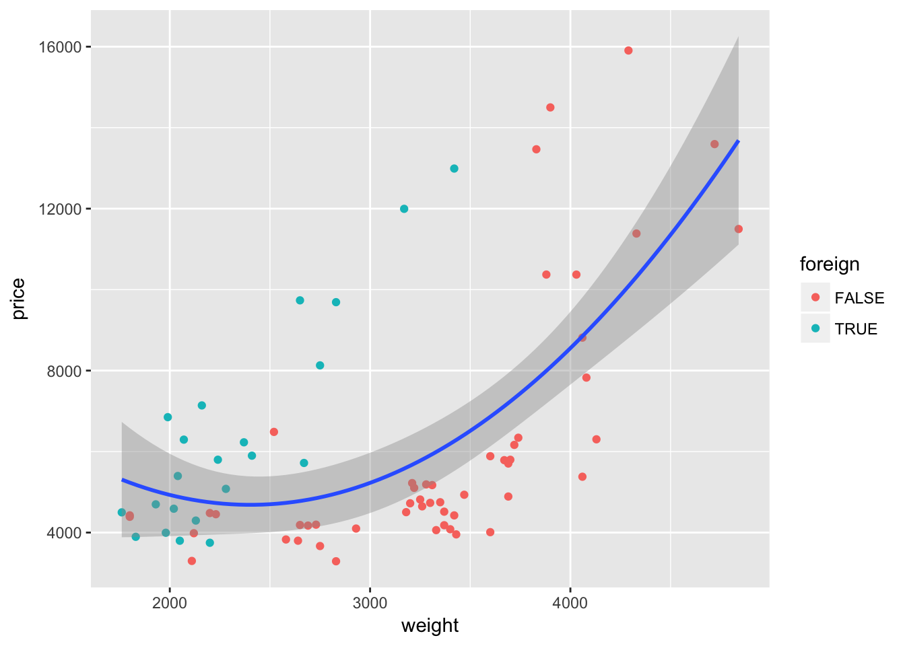
Nope—not quite what we want. We wanted separate lines for foreign and domestic cars, but we only got one line. What happened? Our mapping of color to the variable foreign is inside of a single layer (the layer created by geom_point()). If we want this mapping to apply to other layers, we should move the mapping to the original ggplot() instance:
ggplot(data = cars, aes(x = weight, y = price, color = foreign)) +
geom_point() +
geom_smooth(method = "lm", formula = y ~ x + I(x^2))
Because the variable foreign is either TRUE or FALSE, ggplot2 treats it as a factor/categorical variable. ggplot2 treats both logical and character variables as categorical variables.7
When you map a continuous variable to color, instead of plotting discrete colors, ggplot2 will give you a color scale. For example, let’s map the mileage variable length to color (instead of foreign).
ggplot(data = cars, aes(x = weight, y = price)) +
geom_point(aes(color = length))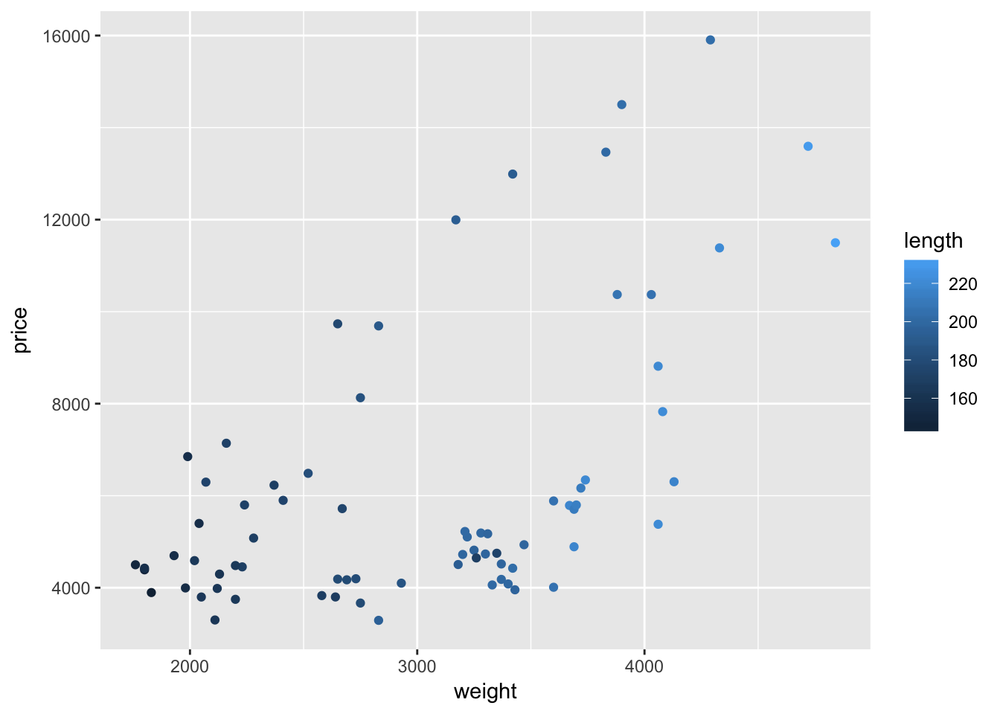
Interesting.
Once again, ggplot2’s default color theme is not great, but we will soon cover how you can change the colors.
Size
As we saw above, size can increase (or decrease) the plotting size of points and lines. As with color, you can use this aesthetic to tweak your plots, and you can also use it to depict another dimension of your data. To illustrate this idea, let’s again plot weight and price. Let’s return to mapping the foreign/domestic split to the color of the point. And now let’s map the mileage (mpg) of the car to the size of the point (i.e., size = mpg).
ggplot(data = cars, aes(x = weight, y = price)) +
geom_point(aes(color = foreign, size = mpg))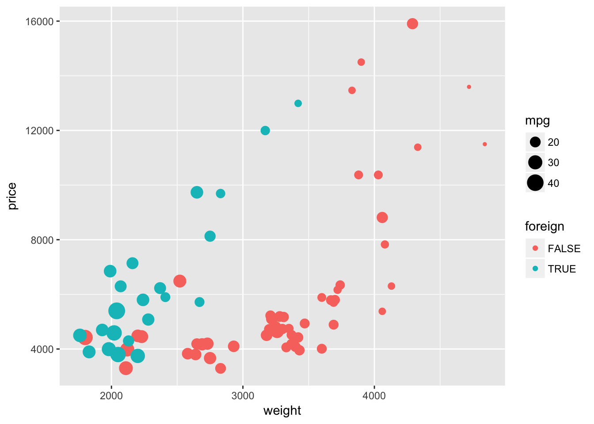
We are now showing four dimensions of the data with a single plot on two axes. Pretty impressive.
Other aesthetics
You have a bunch of other options aesthetics that work in similar ways—you can use them to adjust graphical parameters of your plot and/or to create additional dimensions of your figure:
- shape (
shape): changes the shape of the points - fill (
fill): very similar tocolor; some geometries have color, others have fills, and still others have both colors and fills - group (
group): creates groups of objects for plotting—especially helpful for grouping series of lines - line type (
linetype): changes the type of line - alpha (
alpha): adjusts the opacity of the elements in your plot
If you think that the points are beginning to overlap a little too much but you don’t want to change the size, you could try adjusting either shape or alpha.
First, let’s change the shape to shape = 1. Because we adjusting shape and not mapping it to a specific variable, we need to place the shape = 1 argument outside of the aes() function.
ggplot(data = cars, aes(x = weight, y = price)) +
geom_point(aes(color = foreign, size = mpg), shape = 1)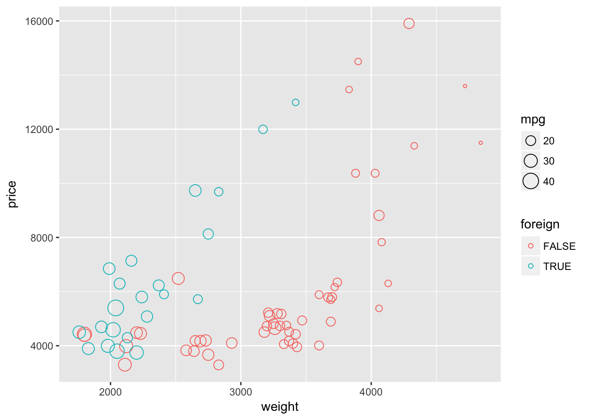
Now let’s try using the default shape and instead set alpha = 0.5. This setting of alpha will make the plotted characters semi-transparent. Again, because we adjusting alpha and not mapping it to a specific variable, we need to place the alpha = 0.5 argument outside of the aes() function.
ggplot(data = cars, aes(x = weight, y = price)) +
geom_point(aes(color = foreign, size = mpg), alpha = 0.5)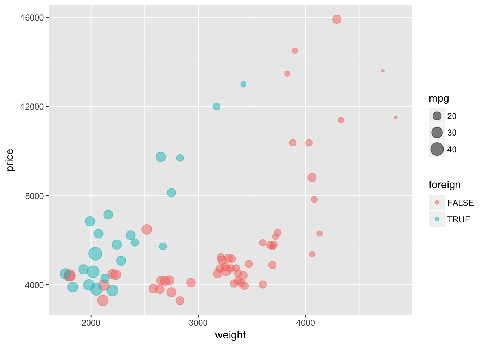
I’m not sure which way is better for showing overlapping points, but I think both of these methods help show the overlapping points better than using default values.
Labels
Clear and coherent labels and titles are an extremely important element of informative figures. To label the x- and y-axis, add the layers with the functions xlab() and ylab(). To add a title to your plot, add a layer with ggtitle(). ggtitle() also takes a second optional argument subtitle.
Let’s label our plot.
ggplot(data = cars, aes(x = weight, y = price)) +
geom_point(aes(color = foreign, size = mpg), alpha = 0.5) +
xlab("Weight (lbs)") +
ylab("Price (USD)") +
ggtitle("Trends in cars sold on the US market",
subtitle = "From the world-famous autos dataset")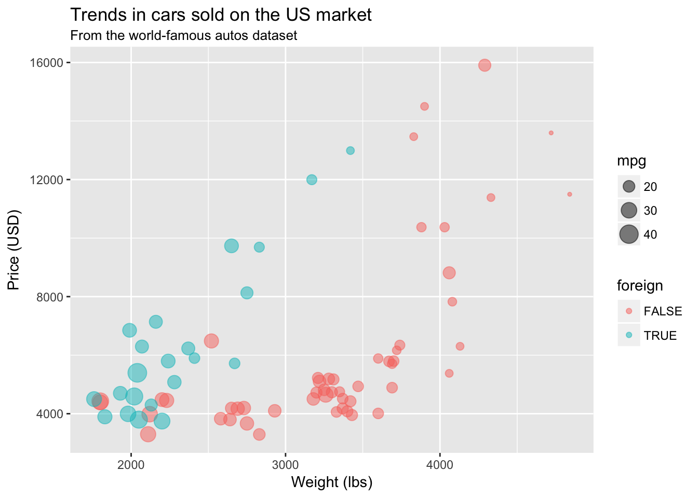
Themes
If you want to change facets of your figure like the background, the size of the labels on the axis, or the position of the legend, you can add adjust elements inside ggplot2‘s theme. Or you can use a pre-built theme. ggplot2 offers a few alternative themes (e.g., theme_bw() or theme_minimal()). In addition, the package ggthemes (unsurprisingly) offers a number of ready-to-use themes (many are inspired by news websites’ themes—e.g., The Economist, 538, and the WSJ).8
One very simple theme from ggthemes is called theme_pander(). To use a theme (or any other theme), just add it to the end of your figure after you’ve created all of the layers:
ggplot(data = cars, aes(x = weight, y = price)) +
geom_point(aes(color = foreign, size = mpg), alpha = 0.5) +
xlab("Weight (lbs)") +
ylab("Price (USD)") +
ggtitle("Trends in cars sold on the US market",
subtitle = "From the world-famous autos dataset") +
theme_pander()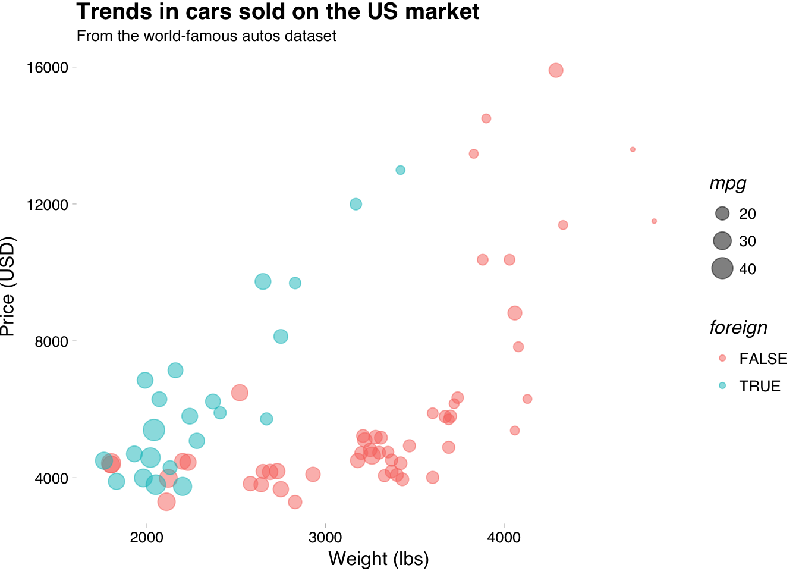
If, for some reason, you want to make people think you used Stata to make this figure, you can use the theme_stata() theme.
ggplot(data = cars, aes(x = weight, y = price)) +
geom_point(aes(color = foreign, size = mpg), alpha = 0.5) +
xlab("Weight (lbs)") +
ylab("Price (USD)") +
ggtitle("Trends in cars sold on the US market",
subtitle = "From the world-famous autos dataset") +
theme_stata() +
theme(panel.ontop = F)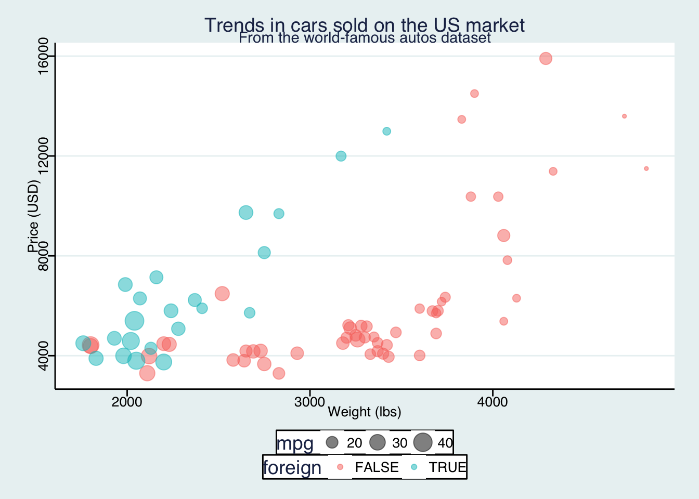
If you want even more freedom in changing the elements of your ggplot2 theme, you can directly change them inside of theme(). Type ?theme into your R console, and you will see all of the possible elements of ggplot2’s theme that you can edit. To change an element of the ggplot2 theme, you need to define a new value for that element inside of theme() and add the theme() to the end of your plot. For example, to move your legend to the bottom of your figure, place legend.position = "bottom" inside of theme() and add it to your plot.
ggplot(data = cars, aes(x = weight, y = price)) +
geom_point(aes(color = foreign, size = mpg), alpha = 0.5) +
xlab("Weight (lbs)") +
ylab("Price (USD)") +
ggtitle("Trends in cars sold on the US market",
subtitle = "From the world-famous autos dataset") +
theme(legend.position = "bottom")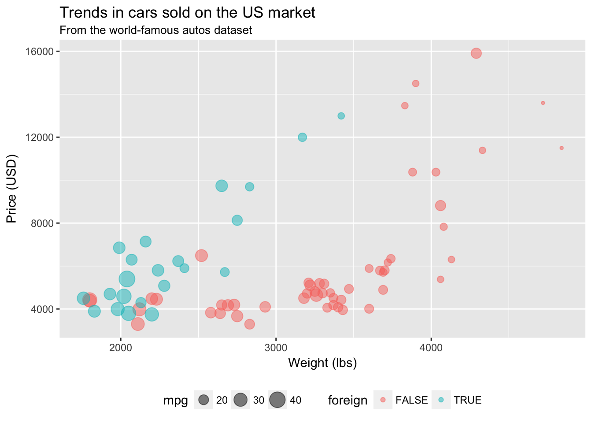
You can remove the grey background of the figure using panel.background = element_rect(fill = NA) inside theme().
ggplot(data = cars, aes(x = weight, y = price)) +
geom_point(aes(color = foreign, size = mpg), alpha = 0.5) +
xlab("Weight (lbs)") +
ylab("Price (USD)") +
ggtitle("Trends in cars sold on the US market",
subtitle = "From the world-famous autos dataset") +
theme(
legend.position = "bottom",
panel.background = element_rect(fill = NA))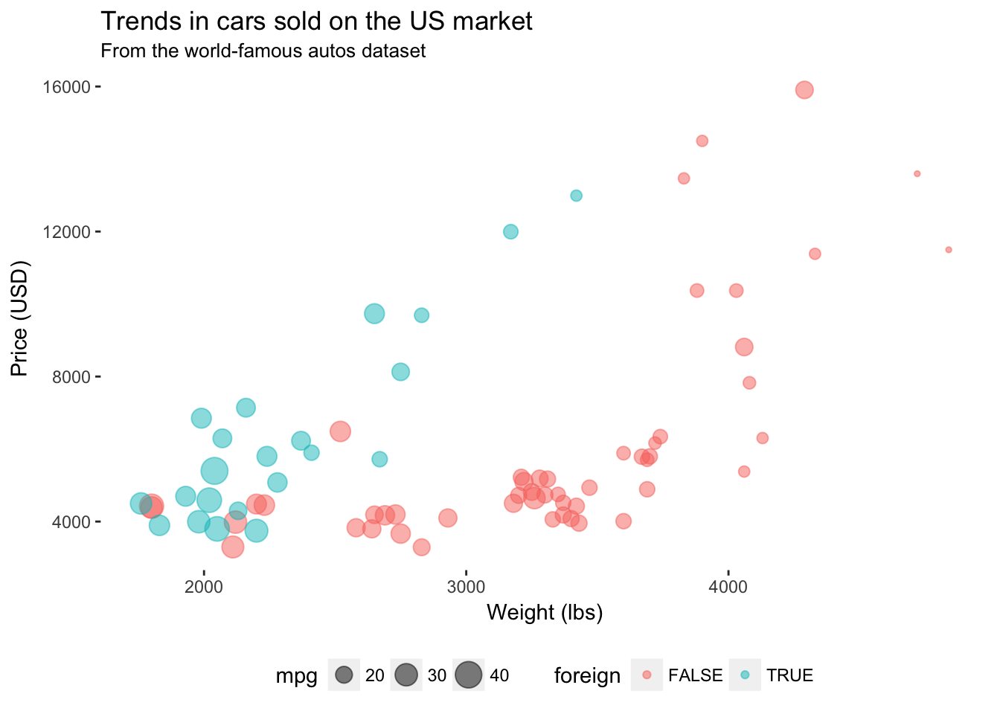
Pretty nice. But what if your advisor wants a box around the plot? We can use panel.border to add the border back into the theme. Let’s make it grey—specificaly grey75, which is a fairly light grey. Note that ggplot2 accepts values of grey starting at grey00 (a.k.a “black”) through grey100 (a.k.a. “white”).
ggplot(data = cars, aes(x = weight, y = price)) +
geom_point(aes(color = foreign, size = mpg), alpha = 0.5) +
xlab("Weight (lbs)") +
ylab("Price (USD)") +
ggtitle("Trends in cars sold on the US market",
subtitle = "From the world-famous autos dataset") +
theme(
legend.position = "bottom",
panel.background = element_rect(fill = NA),
panel.border = element_rect(fill = NA, color = "grey75"))
I like the lighter box, but now the ticks on the axes don’t match. We should probably change their color so they are a bit lighter than the border. For this task, we will edit the color in axis.ticks.
ggplot(data = cars, aes(x = weight, y = price)) +
geom_point(aes(color = foreign, size = mpg), alpha = 0.5) +
xlab("Weight (lbs)") +
ylab("Price (USD)") +
ggtitle("Trends in cars sold on the US market",
subtitle = "From the world-famous autos dataset") +
theme(
legend.position = "bottom",
panel.background = element_rect(fill = NA),
panel.border = element_rect(fill = NA, color = "grey75"),
axis.ticks = element_line(color = "grey85"))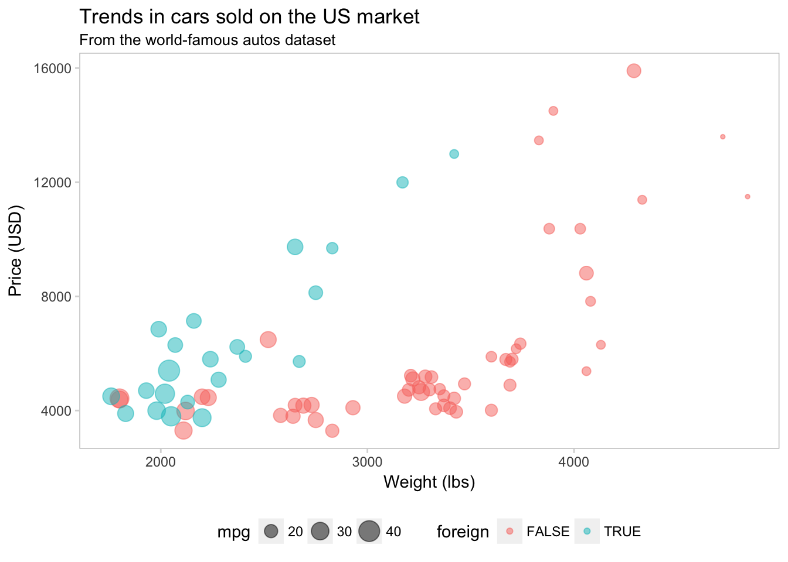
We can also add a light grid to the background of the plot.
ggplot(data = cars, aes(x = weight, y = price)) +
geom_point(aes(color = foreign, size = mpg), alpha = 0.5) +
xlab("Weight (lbs)") +
ylab("Price (USD)") +
ggtitle("Trends in cars sold on the US market",
subtitle = "From the world-famous autos dataset") +
theme(
legend.position = "bottom",
panel.background = element_rect(fill = NA),
panel.border = element_rect(fill = NA, color = "grey75"),
axis.ticks = element_line(color = "grey85"),
panel.grid.major = element_line(color = "grey95", size = 0.2),
panel.grid.minor = element_line(color = "grey95", size = 0.2))
Finally, I am going to remove the little grey boxes around the legend elements by setting legend.key to element_blank().
ggplot(data = cars, aes(x = weight, y = price)) +
geom_point(aes(color = foreign, size = mpg), alpha = 0.5) +
xlab("Weight (lbs)") +
ylab("Price (USD)") +
ggtitle("Trends in cars sold on the US market",
subtitle = "From the world-famous autos dataset") +
theme(
legend.position = "bottom",
panel.background = element_rect(fill = NA),
panel.border = element_rect(fill = NA, color = "grey75"),
axis.ticks = element_line(color = "grey85"),
panel.grid.major = element_line(color = "grey95", size = 0.2),
panel.grid.minor = element_line(color = "grey95", size = 0.2),
legend.key = element_blank())
Okay. I think the figure is looking better.
If you figure out a set of settings for the theme that you really like, you can create your own theme object to apply to your figures, just like you would write a function to avoid typing the same thing repeatedly. Creating your own theme also ensures your figures will match each other.
Let’s create our own theme based upon the values in the theme() above:
theme_ed <- theme(
legend.position = "bottom",
panel.background = element_rect(fill = NA),
panel.border = element_rect(fill = NA, color = "grey75"),
axis.ticks = element_line(color = "grey85"),
panel.grid.major = element_line(color = "grey95", size = 0.2),
panel.grid.minor = element_line(color = "grey95", size = 0.2),
legend.key = element_blank())That’s it! Now all we need to do is add theme_ed to the end of a figure.
ggplot(data = cars, aes(x = weight, y = price)) +
geom_point(aes(color = foreign, size = mpg), alpha = 0.5) +
xlab("Weight (lbs)") +
ylab("Price (USD)") +
ggtitle("Trends in cars sold on the US market",
subtitle = "From the world-famous autos dataset") +
theme_ed
More control
Our figure is looking pretty good right at this point, but there are a few things I do not love: (1) the colors and (2) the legend labels. To change elements in the legend (colors, titles, labels, etc.), you will typically add a layer to your plot using a function that begins with scale_. Examples of these scale_ functions include—but are not limited to—scale_color_gradientn(), scale_fill_manual(), scale_size_continuous().
The general idea of these scale_ functions is that the middle word is the mapped aesthetic (size, color, shape, etc.) and the last word determines how to create the scale (e.g., is the scale discrete or continuous).
To customize our discrete colorscale created by mapping the variable foreign to color, we will use scale_color_manual(). The manual() suffix is for discrete color scales; if we had mapped a continuous variable to color, we would use one of the scale_ functions that end with gradient. The scale_color_manual() function needs three arguments:
- the title of the scale for the legend
- a character vector of
valuesthat give the desired colors - a character vector of
labelsthat give the labels for the legend
ggplot(data = cars, aes(x = weight, y = price)) +
geom_point(aes(color = foreign, size = mpg), alpha = 0.5) +
xlab("Weight (lbs)") +
ylab("Price (USD)") +
ggtitle("Trends in cars sold on the US market",
subtitle = "From the world-famous autos dataset") +
scale_color_manual("Origin",
values = c("grey70", "midnightblue"),
labels = c("Domestic", "Foreign")) +
theme_ed
It is important to keep in mind that R defaults to alpha-numeric ordering. Our foreign variable takes on the values TRUE and FALSE, which means that R will place FALSE as the first item in the legend and TRUE as the second. So if we want to change the label associated with domestic cars, we need to consider how R has ordered the levels of foreign in the legend.
If you are having problems deciding which colors to use, there are many pre-defined color themes (palettes) in R. One example in the base installation of R is rainbow(). If you give rainbow() an integer \(n\), it will return \(n\) colors from the rainbow palette. There are also packages written exclusively for creating color palettes. One popular option is the package RColorBrewer. I’m a fan of the package viridis because it is color-blind friendly, honest, and pretty. To learn more about it, check out the vignette on CRAN. Let’s use the viridis() function (from the viridis package) to pick two colors for our figure.9 I am also going to increase the alpha value a bit to make the colors a little brighter.
ggplot(data = cars, aes(x = weight, y = price)) +
geom_point(aes(color = foreign, size = mpg), alpha = 0.65) +
xlab("Weight (lbs)") +
ylab("Price (USD)") +
ggtitle("Trends in cars sold on the US market",
subtitle = "From the world-famous autos dataset") +
scale_color_manual("Origin",
values = viridis(2, end = 0.96),
labels = c("Domestic", "Foreign")) +
scale_size_continuous("Mileage") +
theme_ed
Now, let’s change the title of the mpg variable in our legend. Because we’ve mapped mpg to size, and because mpg is a continuous variable, we will use the function scale_size_continuous().
ggplot(data = cars, aes(x = weight, y = price)) +
geom_point(aes(color = foreign, size = mpg), alpha = 0.65) +
xlab("Weight (lbs)") +
ylab("Price (USD)") +
ggtitle("Trends in cars sold on the US market",
subtitle = "From the world-famous autos dataset") +
scale_color_manual("Origin",
values = viridis(2, end = 0.96),
labels = c("Domestic", "Foreign")) +
scale_size_continuous("Mileage") +
theme_ed
Notice that order of the layers matters: because we changed scale_size_continuous() last, it now prints second in the legend (after scale_color_manual()).
Finally, let’s add the quadratic regression lines without confidence intervals. I am going to move color = foreign from the aes() inside of geom_point() to the aes() inside ggplot() to force ggplot2 to calculate the regression for domestic and foreign cars separately. We will also make the lines a bit thinner (size = 0.5) and dashed (linetype = 2).
ggplot(data = cars,
aes(x = weight, y = price, color = foreign)) +
geom_point(alpha = 0.65, aes(size = mpg)) +
geom_smooth(method = "lm", formula = y ~ x + I(x^2),
se = F, size = 0.5, linetype = 2) +
xlab("Weight (lbs)") +
ylab("Price (USD)") +
ggtitle("Trends in cars sold on the US market",
subtitle = "From the world-famous autos dataset") +
scale_color_manual("Origin",
values = viridis(2, end = 0.96),
labels = c("Domestic", "Foreign")) +
scale_size_continuous("Mileage") +
theme_ed
Alright. I think we’ve done enough with this one figure. Let’s talk about a few other geometries in the ggplot2 library.
Histograms and density plots
Two common and related geometries are geom_histogram() and geom_density(). As you might guess, geom_histogram() creates histograms, and geom_density() creates smoothed density estimates. Let’s check out the histogram of weights from our cars data. The big differences here—compared to our figures above—are
- We need to use
geom_histogram()rather thangeom_point() - We will only map the
xtoweight(no mapping fory).
ggplot(data = cars, aes(x = weight)) +
geom_histogram() +
xlab("Weight (lbs)") +
ggtitle("The distribution of weight for cars sold in the US",
subtitle = "From the world-famous autos dataset") +
theme_ed## `stat_bin()` using `bins = 30`. Pick better value with `binwidth`.
Not terrible, but I think we have too many bins. Let’s tell ggplot2 that we only want 15 bins. To change the number of bins, we can give geom_histogram() an optional argument of bins. Let’s also see what happens when we give geom_histogram() a color, i.e., color = "seagreen3".
ggplot(data = cars, aes(x = weight)) +
geom_histogram(bins = 15, color = "seagreen3") +
xlab("Weight (lbs)") +
ggtitle("The distribution of weight for cars sold in the US",
subtitle = "From the world-famous autos dataset") +
theme_ed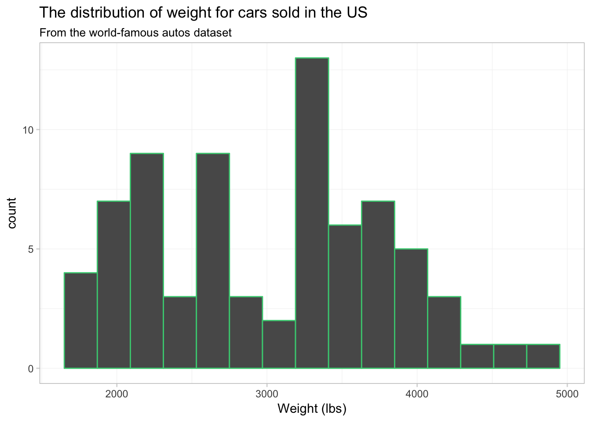
We now have 15 bins. You probably also noticed that each bin now has a sea green border. This colored border resulted from color = "seagreen3". If we want to fill the histogram’s bins with a color, we should use the fill argument, i.e., fill = "grey90". Let’s try again.
ggplot(data = cars, aes(x = weight)) +
geom_histogram(bins = 15, color = "seagreen3", fill = "grey90") +
xlab("Weight (lbs)") +
ggtitle("The distribution of weight for cars sold in the US",
subtitle = "From the world-famous autos dataset") +
theme_ed
Okay, it worked. Not necessarily the prettiest graph in the world—I’m not sure what the green borders are adding to our figure—but the point is that color and fill do different things.
What if we want to plot separate histograms for foreign and domestic cars? We need to map an aesthetic to the variable foreign, but which aesthetic do we want? Probably fill—color will only vary the border on the bins. Let’s map fill to foreign and see what happens.
ggplot(data = cars, aes(x = weight)) +
geom_histogram(bins = 15, aes(fill = foreign)) +
xlab("Weight (lbs)") +
ggtitle("The distribution of weight for cars sold in the US",
subtitle = "From the world-famous autos dataset") +
theme_ed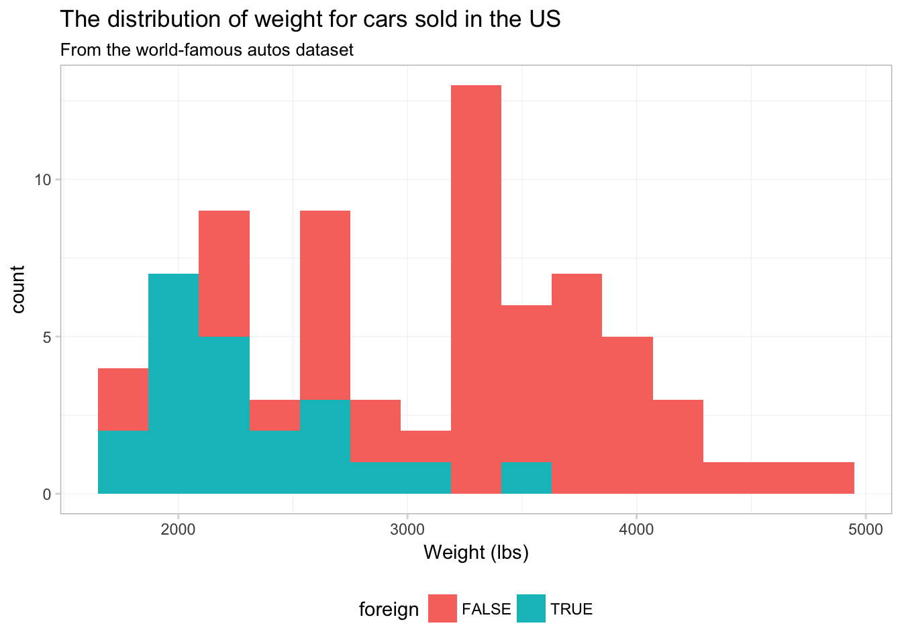
Strange. It looks like someone is about to lose at Tetris.
To see what is going on here, compare this figure to the previous figure. Notice that the two figures have the same histogram shape—ggplot2 is not creating separate histograms. Instead, ggplot2 is fill-ing the histogram based upon the variable foreign—essentially stacking the histograms. We can tell ggplot2 that want to let the histograms overlap—as opposed to stacking them—using the argument position = "identity" inside geom_histogram():10
ggplot(data = cars, aes(x = weight)) +
geom_histogram(aes(fill = foreign),
bins = 15, position = "identity", alpha = 0.75) +
xlab("Weight (lbs)") +
ggtitle("The distribution of weight for cars sold in the US",
subtitle = "From the world-famous autos dataset") +
theme_ed
No you can see why ggplot2 defaults to stacking—this figure does not really present a clear picture of what is going on. Let’s see if we can clean this figure up a bit.
ggplot(data = cars, aes(x = weight)) +
geom_histogram(aes(color = foreign, fill = foreign),
bins = 15, position = "identity", alpha = 0.4) +
xlab("Weight (lbs)") +
ggtitle("The distribution of weight for cars sold in the US",
subtitle = "From the world-famous autos dataset") +
scale_color_manual("Origin",
values = c("grey70", "seagreen3"),
labels = c("Domestic", "Foreign")) +
scale_fill_manual("Origin",
values = c("grey60", "seagreen3"),
labels = c("Domestic", "Foreign")) +
theme_ed
That’s a bit better. What if we just drop one of the fills altogether? Instead of assigning a color in scale_fill_manual(), we can just assign NA:
ggplot(data = cars, aes(x = weight)) +
geom_histogram(aes(color = foreign, fill = foreign),
bins = 15, position = "identity", alpha = 0.4) +
xlab("Weight (lbs)") +
ggtitle("The distribution of weight for cars sold in the US",
subtitle = "From the world-famous autos dataset") +
scale_color_manual("Origin",
values = c("seagreen3", "grey70"),
labels = c("Domestic", "Foreign")) +
scale_fill_manual("Origin",
values = c(NA, "grey60"),
labels = c("Domestic", "Foreign")) +
theme_ed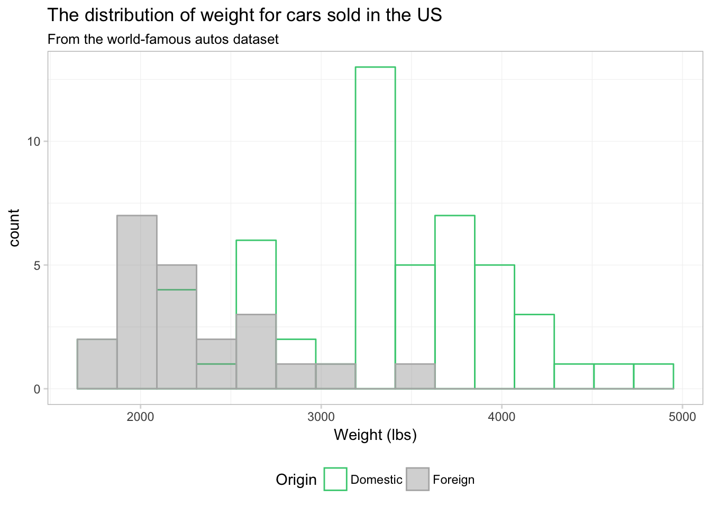
Maybe. I still think the overlapping bins are a little confusing. Let’s try a density plot. We can essentially swap geom_density() for geom_histogram(). We just drop bins = 15, as the density plot does not have bins.
ggplot(data = cars, aes(x = weight)) +
geom_density(aes(color = foreign, fill = foreign),
alpha = 0.4) +
xlab("Weight (lbs)") +
ggtitle("The distribution of weight for cars sold in the US",
subtitle = "From the world-famous autos dataset") +
scale_color_manual("Origin",
values = c("seagreen3", "grey70"),
labels = c("Domestic", "Foreign")) +
scale_fill_manual("Origin",
values = c(NA, "grey60"),
labels = c("Domestic", "Foreign")) +
theme_ed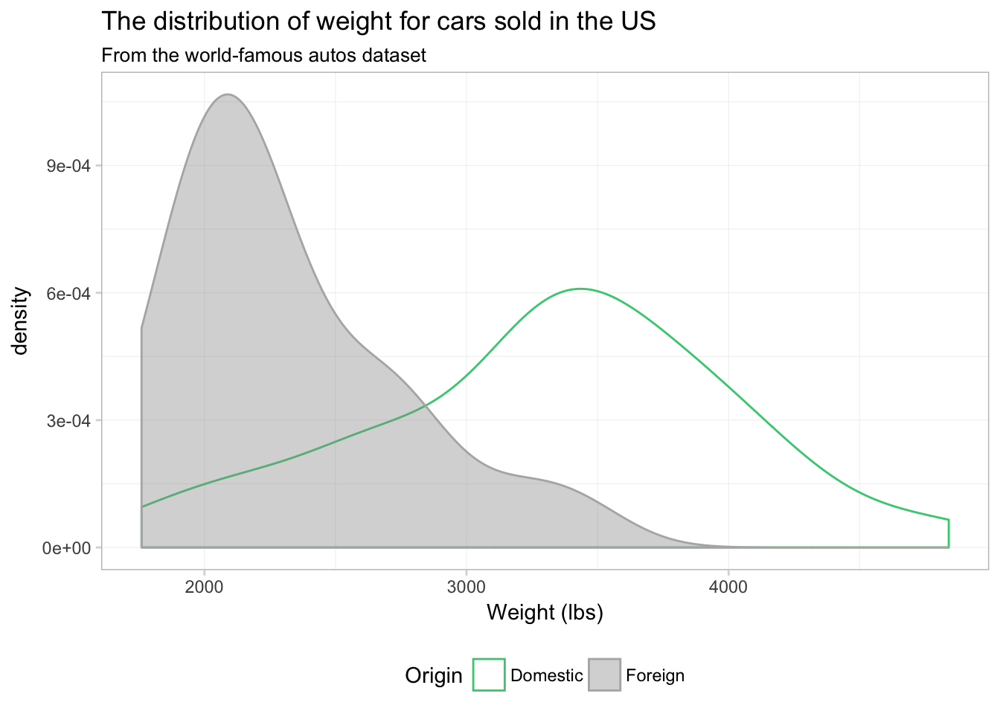
I would say this plot provides a lot more insight than any of the histograms we produced above.
Notice that the \(y\)-axis has changed from count to density, as we are now approximating a continuous distribution. You can force ggplot2 to give you a density-based \(y\)-axis for histograms by mapping the aesthetic y to ..density.., which is a variable that ggplot2 calculates in the process of making the plot. Using this option, we can plot a histogram and density plot in the same figure. And just for fun, let’s color each bin of the histogram a different color. Because we are not mapping a variable to the color aesthetic, our call to color needs to be outside of the aes() in geom_histogram(). I’m going to using 15 colors from viridis(), and I am going to reverse them using the rev() function. Handy, right?
ggplot(data = cars, aes(x = weight)) +
geom_histogram(aes(y = ..density..),
bins = 15, color = NA, fill = rev(viridis(15))) +
geom_density(fill = "grey55", color = "grey80", alpha = 0.2) +
xlab("Weight (lbs)") +
ggtitle("The distribution of weight for cars sold in the US",
subtitle = "From the world-famous autos dataset") +
theme_ed
Well… it’s colorful, if nothing else. I’m not sure the individually colored bins provide much information.
Saving
Saving the your ggplot2 figures is pretty straightforward: you use the ggsave() function. The arguments you will typically use in ggsave():
filename: the name you wish to give your saved plot, including the suffix that denotes the file type (e.g.,.png,.pdf, or.jpg)plot: the name of the plot to save. If you do not specify a plot,ggsave()will save the last plot thatggplot2displayed.path: the path (dirctory) where you would like to save your figure. The default is the current working directory.widthandheight: the dimensions of the outputted figure (the default is inches).
Thus, if you want to save the last figure that ggplot2 displayed as a PDF, we can write
ggsave(filename = "ourNewFigure.pdf", width = 16, height = 10)This line of R code will save the plot in our current working directory as a 16-by-10 (inch) PDF.
You can also prevent a ggplot2 figure from displaying on your screen by assigning it to a name like a normal object in R:
our_histogram <- ggplot(data = cars, aes(x = weight)) +
geom_histogram(aes(y = ..density..),
bins = 15, color = NA, fill = rev(viridis(15))) +
geom_density(fill = "grey55", color = "grey80", alpha = 0.2) +
xlab("Weight (lbs)") +
ggtitle("The distribution of weight for cars sold in the US",
subtitle = "From the world-famous autos dataset") +
theme_edThe figure is now stored as our_histogram and did not print to the screen.
Now we can save our_histogram to my desktop (as PNG):
ggsave(filename = "anotherHistogram.png", plot = our_histogram,
path = "/Users/edwardarubin/Desktop", width = 10, height = 8)Still more
We have only scratched the surface of ggplot2. Check out the documentation for ggplot2: there are a lot of geometries and aesthetics that we have not covered here. I’ll leave you with a few examples:
Daily average temperatures for each county in California, 2014–2015:
ggplot(data = filter(weather_df, state == "06"),
aes(x = date, y = temp)) +
geom_point(aes(color = temp), size = 0.5, alpha = 0.8) +
xlab("Date") +
ylab("Daily avg. temperature (F)") +
ggtitle(paste("Average daily temperature for",
"each Californian county, 2014-2015"),
subtitle = "Source: NARR") +
scale_color_viridis(option = "B") +
theme_ed +
theme(
panel.border = element_blank(),
axis.ticks = element_blank(),
legend.position = "none")Now with lines.
ggplot(data = filter(weather_df, state == "06"),
aes(x = date, y = temp, group = fips)) +
geom_line(aes(color = temp), size = 0.5, alpha = 0.8) +
xlab("Date") +
ylab("Daily avg. temperature (F)") +
ggtitle(paste("Average daily temperature for",
"each Californian county, 2014-2015"),
subtitle = "Source: NARR") +
scale_color_viridis(option = "B") +
theme_ed +
theme(
panel.border = element_blank(),
axis.ticks = element_blank(),
legend.position = "none")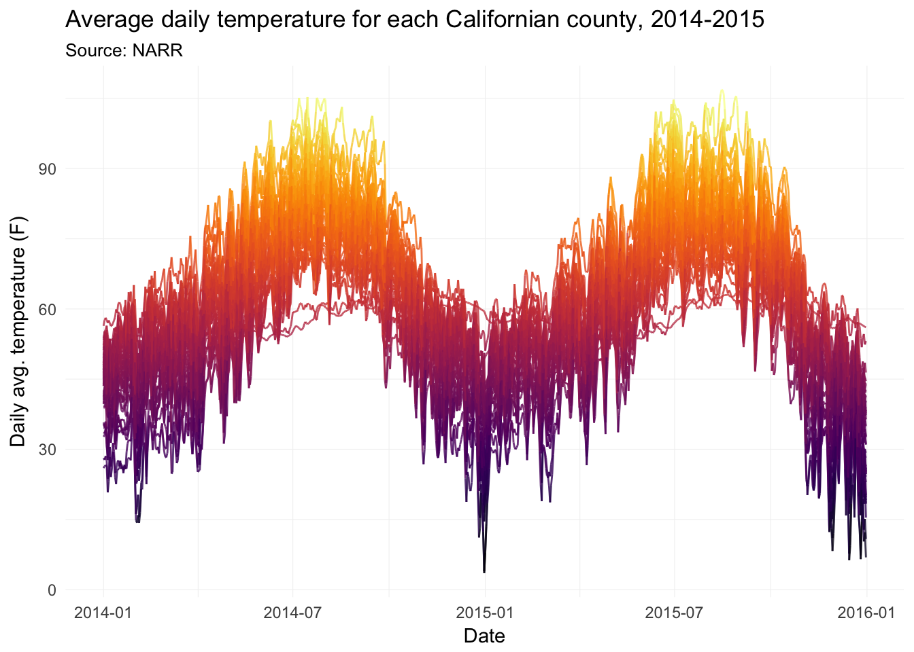
Comparing Alameda County’s average daily average temperature to the rest of the counties in California.
ggplot() +
geom_point(
data = filter(weather_df, state == "06", fips != "06001"),
aes(x = date, y = temp),
shape = 1, alpha = 0.2, size = 0.6, color = "grey60") +
geom_point(
data = filter(weather_df, state == "06", fips == "06001"),
aes(x = date, y = temp),
color = "grey20", size = 0.7) +
xlab("Date") +
ylab("Daily avg. temperature (F)") +
ggtitle(paste("Comparing Alameda County's daily temperatures\n",
"to other Californian counties, 2014-2015"),
subtitle = "Source: NARR") +
scale_color_viridis(option = "B") +
theme_ed +
theme(
panel.border = element_blank(),
axis.ticks = element_blank(),
legend.position = "none")
Map average temperature for each county in the US on 23 February 2014.
ggplot(data = us_shp,
aes(x = long, y = lat, fill = temp, group = group)) +
geom_polygon(color = NA) +
ggtitle("Average temperature (F) on 23 February 2014") +
scale_fill_viridis("Average temperature (F)", option = "B") +
coord_map("albers", 30, 40) +
theme_map() +
theme(
legend.position = "bottom",
legend.direction = "horizontal",
legend.justification = "center") +
guides(fill = guide_colorbar(
barwidth = 20,
barheigh = 1.5,
title.position = "top"))## Warning: `panel.margin` is deprecated. Please use `panel.spacing` property
## instead
Plotting functions
In economics, we often want to just plot a function—for instance, a demand curve (or inverse demand curve). The easiest way to plot an arbitrary function in R is probably with the curve() function. Let’s define inverse demand and supply functions.
# Define the inverse demand and supply functions
inv_demand <- function(q) 10 - q
inv_supply <- function(q) 1.5 * qAnd now plot them.
# Plot the inverse demand and supply functions
curve(expr = inv_demand, from = 0, 10,
xlab = "Q", ylab = "P", n = 100)
curve(expr = inv_supply,
from = 0, 10, add = T)
# Shift the supply back
curve(expr = inv_supply(x) + 3,
from = 0, 10, add = T, col = "red")
curve() is very helpful for plotting functions quickly, but we can do it in ggplot2, as well. We will define the domain of our function in the inside of a data.frame in ggplot(). Then we will create layers that trace out our functions using stat_function(). We need to tell stat_function() the name of the function we want and the geometry (geom) that we want to use.
ggplot(data = data.frame(x = c(0, 10)), aes(x)) +
# The inverse demand
stat_function(fun = inv_demand, geom = "line") +
# The inverse supply
stat_function(fun = inv_supply, geom = "line") +
# The shifted inverse supply curve
stat_function(fun = function(x) inv_supply(x) + 3, geom = "line",
linetype = 2) +
# Labels and themes
xlab("Quantity") +
ylab("Price") +
ggtitle("Classic economics figure") +
theme_ed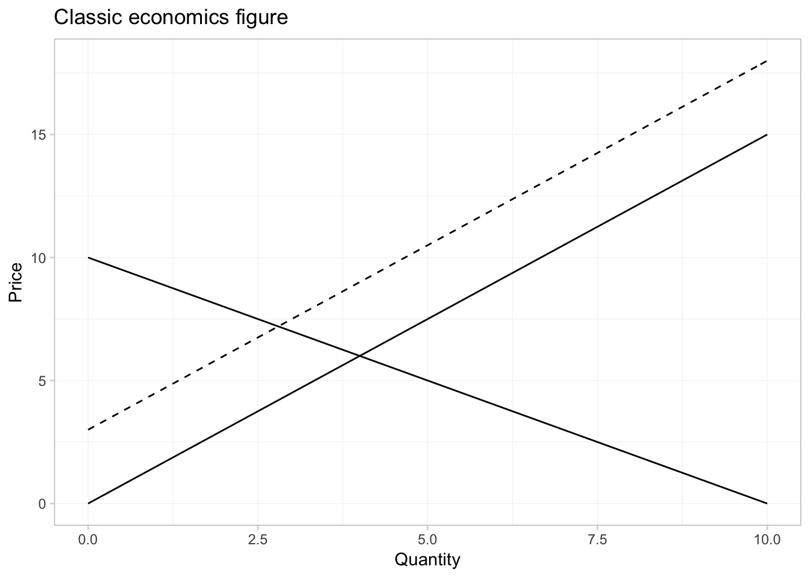
And if we want to annotate the equilibria in the picture, can we can use the annotate() function from ggplot2. First, let’s solve for the equilibria. I know how to do math, but since we are doing everything in R, we can have R solve for the equilibria for us using the uniroot() function. We will give uniroot() the difference of our two functions, and it will return the point at which the difference is (approximately) zero. (Note that it will give us the equilibrium quantity; we will then have to plug the quantity into the inverse demand or supply functions to get the equilibrium price.)
# The first equilibrium quantity
q1 <- uniroot(
f = function(x) inv_supply(x) - inv_demand(x),
interval = c(0, 10))$root
p1 <- inv_demand(q1)
# The second equilibrium equantity
q2 <- uniroot(
f = function(x) inv_supply(x) + 3 - inv_demand(x),
interval = c(0, 10))$root
p2 <- inv_demand(q2)Finally, let’s annotate our figure—specifically, we will add points for each equilibrium and text to label the equilibria and lines.
ggplot(data = data.frame(x = c(0, 10)), aes(x)) +
# The inverse demand
stat_function(fun = inv_demand, geom = "line") +
# The inverse supply
stat_function(fun = inv_supply, geom = "line") +
# The shifted inverse supply curve
stat_function(fun = function(x) inv_supply(x) + 3, geom = "line",
linetype = 2) +
# Annotate!
annotate(geom = "point", x = c(q1, q2), y = c(p1, p2), size = 2.5) +
annotate(geom = "text", x = c(q1, q2), y = c(p1, p2) + 1,
label = c("EQ[0]", "EQ[1]"), parse = T) +
annotate(geom = "text", x = 9.5,
y = c(inv_supply(9.5)-0.7, inv_supply(9.5)+3-0.7, inv_demand(9.5)+0.7),
label = c("S[0]", "S[1]", "D"), parse = T) +
# Labels and themes
xlab("Quantity") +
ylab("Price") +
ggtitle("Classic economics figure") +
theme_ed
In addition to plotting our own functions, stat_function() can be useful for plotting R’s functions. Let’s trace out the probability density function (pdf) of a random variable from a \(t\) distribution with 29 degrees of freedom.
ggplot(data = data.frame(x = c(-4,4)), aes(x)) +
# Plot the pdf
stat_function(fun = function(x) dt(x, df = 29),
color = "grey75") +
ggtitle(expression(paste("The beautiful ", italic(t),
" distribution"))) +
xlab(expression(italic(t))) +
ylab("Density") +
theme_ed
What if we want to shade the plot?
ggplot(data = data.frame(x = c(-4,4)), aes(x)) +
# Plot the pdf
stat_function(fun = function(x) dt(x, df = 29),
geom = "area", color = "grey65", fill = "grey65", alpha = 0.4) +
ggtitle(expression(paste("The beautiful ", italic(t),
" distribution"))) +
xlab(expression(italic(t))) +
ylab("Density") +
theme_ed
That was a bit trickier than expected. Anyway, let’s try shading above \(t\) of 2 and below \(t\) of -2.
ggplot(data.frame(x = c(-4,4))) +
# Plot the pdf
stat_function(
fun = function(x) dt(x, df = 29),
aes(x),
geom = "area", color = "grey75", fill = "grey75", alpha = 0.4) +
# Shade below -2
stat_function(
fun = function(x) ifelse(x <= -2, dt(x, df = 29), NA),
aes(x),
geom = "area", color = NA, fill = "grey40", alpha = 0.7) +
# Shade above 2
stat_function(
fun = function(x) ifelse(x >= 2, dt(x, df = 29), NA),
aes(x),
geom = "area", color = NA, fill = "grey40", alpha = 0.7) +
ggtitle(expression(paste("The beautiful ", italic(t),
" distribution"))) +
xlab(expression(italic(t))) +
ylab(expression(paste("Density, ", italic(f(t))))) +
theme_ed
That was surprisingly difficult. I think what we are seeing here is that as we move away from figures that describe data, things become a bit more difficult. ggplot2 can create just about any figure you can think of, but it is especially good at creating summaries of data.
Plotting in LaTeX
If you are interested in creating figures in LaTeX, you should check out ShareLaTeX’s guide on the tikz and Pgfplots packages.
This sentence is probably true for most disciplines.↩
If you cannot achieve this task, ask yourself why not. And try to fix it.↩
You should install it (
install.package("ggplot2")).↩This paradigm is similar to the verb constructions in
dplyr.↩Note that you need to use the parentheses even if you are not going to put anything in them, e.g.,
geom_line().↩Check out this resource for recognized color names in R.↩
I’m not crazy about the default colors that
ggplot2provides—they are not colorblind friendly and just leave a bit to be desired. We will discuss how you can change them later.↩See the
ggthemesvignette for a list and examples of the available themes.↩The
end = 0.96argument inviridis()tells the function to choose the second color slightly before theendof the colors cale. The end of the color scale is a pretty bright yellow that does not always show up well on projectors.↩I also add
alpha = 0.75so we can tell if the two histograms overlap.↩